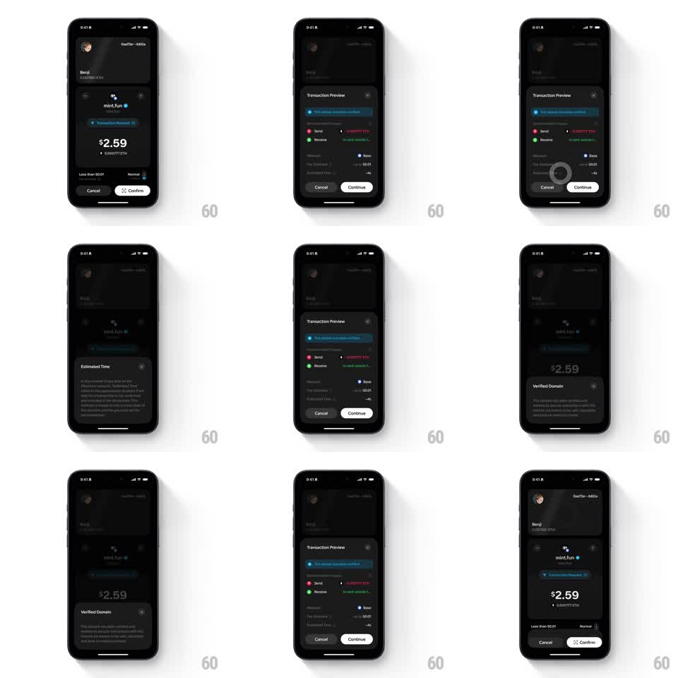

Media
Frame-by-frame

Rebuild this interaction 1:1: Family's transaction sheet morph - on the dark mint.fun transaction screen ($2.59), the "Transaction Preview" sheet morphs between its details layout, an "Estimated Time" explainer, and a "Verified Domain" tooltip, then collapses back to the Cancel / Confirm screen.

Rebuild this interaction 1:1: Family's transaction sheet morph - on the dark mint.fun transaction screen ($2.59), the "Transaction Preview" sheet morphs between its details layout, an "Estimated Time" explainer, and a "Verified Domain" tooltip, then collapses back to the Cancel / Confirm screen. ## Integration Integration: stack-agnostic spec - springs given as stiffness/damping, timed motions as duration + curve; map every value to your framework and animation library of choice. ## Scene Dark transaction screen: Benji wallet card (0.001061 ETH), mint.fun dapp card (verified badge, "Transaction Reviewed" link), "$2.59 / 0.000777 ETH", "Less than $0.01" fee with "Normal", Cancel / white Confirm. Sheet states: "Transaction Preview" (blue info banner "This action requires gas", Send/Receive rows, Network Base, Fee Estimate $0.01, Enhanced Fees -40%, Cancel / Continue); "Estimated Time" (explainer text); "Verified Domain" (explainer: "This domain has been verified..."). ## Motion spec Pattern: contextual sheet morph between details and tooltips. - Tap the fee/time row: the "Transaction Preview" sheet slides up (spring ~300/20), screen dimming behind (scrim 45%). - Tap the time info: the preview's rows slide up and out (150ms, 30ms stagger) as the sheet's height springs down to the "Estimated Time" explainer (spring ~280/22, 300ms), text fading in (200ms). - Tap the domain info: the container re-morphs to the "Verified Domain" layout (same spring), the verified check row popping (scale 0.9 -> 1, spring ~340/16). - Close or tap outside: the sheet morphs back to the preview (reverse) or slides down (250ms) to the Cancel / Confirm screen. ## Calibration - The sheet keeps the app's dark surface with a slightly lighter card tone; corners stay at 20pt. - Explainer sheets are text-dominant - no iconography beyond one glyph. ## Reduced motion Sheet states crossfade (200ms) at eased heights. ## Don't miss - The blue info banner persists in the preview state but not the explainers. - The Cancel / Continue pair in the sheet mirrors the screen's Cancel / Confirm pair.